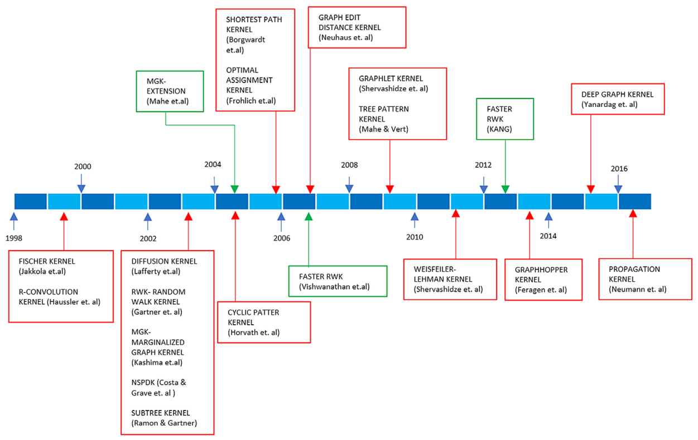

How computers learned to compare networks: a twenty-year tour of graph kernels
Molecules, social networks, web pages and parse trees are all graphs: things (nodes) joined by connections (edges). Machine learning is good at tables of numbers, and much less good at graphs. This paper is a survey. We trace graph kernels, a family of methods for comparing graphs, from their first appearance around 1998 to the techniques in use when we wrote it.
Why graphs are hard
Most learning methods boil down to asking how similar two samples are. For two lists of numbers this is easy, since you can measure the distance between them. For two graphs it is not. The obvious method is to find the parts they share. A graph with n nodes has 2ⁿ possible subgraphs, so that search explodes quickly. We quote Horst Bunke's remark that comparing objects is linear in the number of data items for feature vectors, quadratic for strings and exponential for graphs.
Checking whether two graphs are identical (graph isomorphism) is not known to have a fast algorithm either. Measures of partial overlap are costly too. One classic way to find common pieces, the Bron–Kerbosch algorithm, needed more than 3 hours on the hardware of its day when the combined “product graph” of two graphs of size 24 had roughly 600 nodes.
What a kernel does
A kernel is a function that scores the similarity of two samples. It is used with the support vector machine, a classifier that separates classes with a boundary. Some data cannot be split by a straight boundary. The kernel trick maps the samples into a new space, called a Hilbert space, where closeness means similarity and the split becomes easier. The useful part is that the kernel gives you that similarity without you ever building the new space by hand. A graph kernel is a kernel that scores how alike two graphs are.
A map of the field
We sort graph kernels into a tree. Model-driven kernels use knowledge about how the data is generated. Syntax-driven kernels, the largest group, break graphs into parts such as walks and paths, small subgraphs, or tree-like patterns, and then compare those parts. Two newer groups, propagation kernels and deep graph kernels, sit alongside them.


The main ideas, in plain terms
Random walk kernels count the walks two graphs have in common, as if two walkers wandered through both graphs and we compared their trails. The first version was slow, with a cost of the order of n⁶ in the number of nodes. Later work brought it to n³ and then to n² using a low-rank approximation. Walks have a flaw we call tottering: a walker can bounce back and forth along one shared edge and push the similarity score up for no good reason.
Path-based kernels avoid this, because a path never passes through the same node twice. The shortest-path kernel compares only shortest paths. One experiment in the survey, on 540 proteins from 6 EC classes with 10-fold cross-validation, compares shortest-path variants with walk kernels of length 4 to 7. In its chart the shortest-path bars are the tallest, and the walk bars get lower as the walks get longer.

Graphlet kernels count small subgraphs of a fixed size and compare the two count vectors. The Weisfeiler-Lehman kernel repeatedly gives each node a new label built from the labels of its neighbours, then counts how many labels the two graphs share. Propagation kernels use the way information spreads through a graph, and can cope with graphs whose labels are missing. Deep graph kernels treat small substructures like words in a sentence and learn which ones are similar, using the neural language models behind word embeddings.
Choosing a kernel, and where they are used
No single kernel is the right choice for every graph. The choice depends on the size of the graph, the type of labels, how far meaning travels across the graph, and the risk of tottering. Subgraph and subtree kernels, for example, might not capture similarity accurately when nodes that are far apart carry a lot of meaning. We list uses in chemistry (predicting toxicity or drug effect from molecule graphs), protein function, social networks, the web, language parse trees and image analysis.
Results in more detail
A survey runs no experiments of its own, but it reports what the original authors measured. We collected their numbers. Most are classification accuracy on benchmark datasets, which are sets of small graphs with a class attached to each one, often molecules (we note that MUTAG and PTC come from chemistry).
For random walk kernels, the fast approximations of Kang were tested on three large graphs. The three versions, called ARK-U, ARK-U+ and ARK-L, ran faster than the exact method by 8, 522 and 46 075 times on the WWW graph, by 6, 389 and 695 times on HEP-TH, and by 11, 422 and 97 865 times on Oregon (Table 2).
Table 5 shows what was reported when the Weisfeiler-Lehman (WL) kernel and two of its variants, which change the way labels are compared in each round, were set against older kernels on five datasets. Each cell is a mean accuracy with its standard deviation.
| Method | MUTAG | NCI1 | NCI109 | ENZYMES | D&D |
|---|---|---|---|---|---|
| WL subtree | 82.05 (±0.36) | 82.19 (±0.18) | 82.46 (±0.24) | 52.22 (±1.26) | 79.78 (±0.36) |
| WL edge | 81.06 (±1.95) | 84.37 (±0.30) | 84.49 (±0.20) | 53.17 (±2.04) | 77.95 (±0.70) |
| WL shortest path | 83.78 (±1.46) | 84.55 (±0.36) | 83.53 (±0.30) | 59.05 (±1.05) | 79.43 (±0.55) |
| Ramon & Gärtner | 85.72 (±0.49) | 61.86 (±0.27) | 61.67 (±0.21) | 13.35 (±0.87) | 57.27 (±0.07) |
| p-random walk | 79.19 (±1.09) | 58.66 (±0.28) | 58.36 (±0.94) | 27.67 (±0.95) | 66.64 (±0.83) |
| Random walk | 80.72 (±0.38) | 64.34 (±0.27) | 63.51 (±0.18) | 21.68 (±0.94) | 71.70 (±0.47) |
| Graphlet count | 75.61 (±0.49) | 66.00 (±0.07) | 66.59 (±0.08) | 32.70 (±1.20) | 78.59 (±0.12) |
| Shortest path | 87.28 (±0.55) | 73.47 (±0.11) | 73.07 (±0.11) | 41.68 (±1.79) | 78.45 (±0.26) |
The WL variants have the highest value on four of the five datasets. On MUTAG the shortest-path kernel is highest, at 87.28, and the Ramon and Gärtner kernel is second. On ENZYMES the random walk kernel scores 21.68 and WL shortest path 59.05.
Table 3 reports larger datasets and run times. The GraphHopper kernel reached 69.6 ± 1.3 on ENZYMES in 12 minutes 10 seconds. The shortest-path kernel scored 71.0 ± 1.3, but needed 3 days. On the AIRWAYS dataset GraphHopper took 1 day 7 hours for 66.8 ± 0.5, while the shortest-path kernel did not finish within 30 days and the CSM kernel ran out of 100 GB of memory. The propagation kernel PROP-diff finished AIRWAYS in 4 minutes 12 seconds, with 63.5 ± 0.5 (Table 3).
Propagation kernels are the newer idea built for graphs with partly missing labels and for large graphs. Table 6 compares a propagation kernel (PK) with the Weisfeiler-Lehman (WL), shortest-path (SP) and GraphHopper (GH) kernels. The numbers in brackets are the average run time for each of the ten folds of cross-validation, with ′ for minutes, ″ for seconds and h for hours.
| Method | MUTAG | NCI1 | D&D |
|---|---|---|---|
| PK | 84.5 ± 0.6 (0.2″) | 84.5 ± 0.1 (4.5′) | 78.8 ± 0.2 (3.6′) |
| WL | 84.0 ± 0.4 (0.2″) | 85.9 ± 0.1 (5.6′) | 79.0 ± 0.2 (6.7′) |
| SP | 85.8 ± 0.2 (0.2″) | 74.4 ± 0.1 (21.3″) | OUT OF TIME |
| GH | 85.4 ± 0.5 (1.0′) | 73.2 ± 0.1 (13.0 h) | 68.9 ± 0.2 (69.1 h) |
The survey says propagation kernels can be significantly faster than modern approaches without giving up predictive power. In this table both PK and WL are far quicker than GraphHopper on the larger datasets: on NCI1, PK takes 4.5 minutes and GH 13.0 hours (Table 6). The survey also reports tests where 20%, 40%, 60% or 80% of the node labels were removed from the MSRC9 and MSRC21 datasets. Accuracy falls as more labels go missing. For the method labelled PL, MSRC9 drops from 90.0 to 80.4 and MSRC21 from 86.9 to 69.3 (Table 7).
The last comparison is the one in the callout above. Table 8 sets each of three kernels (graphlet, shortest-path and Weisfeiler-Lehman) beside its deep version, which learns how similar substructures are, instead of treating them as unrelated. The survey says a good kernel should rate graphs of the same class as alike and graphs of different classes as unlike, and that the deep versions strengthen this.
| Dataset | GK | Deep GK | SP | Deep SP | WL | Deep WL |
|---|---|---|---|---|---|---|
| MUTAG | 81.66 ± 2.11 | 82.66 ± 1.45 | 85.22 ± 2.43 | 87.44 ± 2.72 | 80.72 ± 3.00 | 82.94 ± 2.68 |
| ENZYMES | 26.61 ± 0.99 | 27.08 ± 0.79 | 40.10 ± 1.50 | 41.65 ± 1.57 | 53.15 ± 1.14 | 53.43 ± 0.91 |
| PROTEINS | 71.67 ± 0.55 | 71.68 ± 0.50 | 75.07 ± 0.54 | 75.68 ± 0.54 | 72.92 ± 0.56 | 73.30 ± 0.82 |
| NCI1 | 62.28 ± 0.29 | 62.48 ± 0.25 | 73.00 ± 0.24 | 73.55 ± 0.51 | 80.13 ± 0.50 | 80.31 ± 0.46 |
In each row shown here, every deep version has a higher value than the original kernel. The paper states that the deep variants worked better in every case.
Discussion
Our conclusion on choosing a kernel is that it is not easy to pick the best-performing kernel without taking into account the type of graph at hand. That is why the survey names no winner. The properties that matter most, in our view, are the size of the graph, the type of labels, how far information travels across the graph and the chance of tottering. Early random walk kernels are efficient for simple graphs, but as size and complexity grow we need newer techniques.
Each family has limits that we list. Walk-based kernels suffer from tottering, which marginalized-kernel extensions and path-based kernels reduce. Subgraph and subtree kernels may not capture similarity accurately if nodes that lie far apart carry a lot of meaning. Propagation kernels handle missing labels, but only when neighbouring labels depend on each other: if they change drastically, the propagation scheme might not predict the missing labels well. The optimal assignment kernel is not positive definite, which seriously limits its use with support vector machines. The tables above come from the original papers.
On the future, we argued that graph kernels and deep learning could strengthen each other. Deep learning thrives on huge amounts of raw data, while graph kernels process relational or structured information well. Graph kernels also consist mostly of matrix operations, so they should gain from GPUs, but we would need more sophisticated software interfaces to join them to CUDA-based code. We closed by saying that graph kernels were at the pinnacle of their development and that it was time to take on more challenging problems.
Sources
The figures and tables listed here are taken from the paper cited at the top of this page; the numbers quoted in the text come from it too.
- Figures: Fig. 7, Fig. 13, Fig. 12
- Tables: Table 2: speed-ups of fast approximate random walk kernels over the exact method on three large graphs; Table 3: accuracy and run time of GraphHopper and other kernels on four larger datasets; Table 5: accuracy of Weisfeiler-Lehman variants and older kernels on five benchmark datasets; Table 6: propagation kernel against three other kernels: accuracy and run time; Table 7: accuracy with 20 to 80 percent of the node labels missing; Table 8: accuracy of three graph kernels and their deep versions on six benchmark datasets
Acknowledgements
This work is partially supported by the project entitled “Development of knowledge graph from images using deep learning”, sponsored by SERB (Government of India, order no. SB/S3/EECE/054/2016, dated 25/11/2016), and carried out at the Centre for Microprocessor Application for Training Education and Research, CSE Department, Jadavpur University.
Cite the paper
Swarnendu Ghosh, N Das, T Gonçalves, P Quaresma, M Kundu (2018). The journey of graph kernels through two decades. Computer Science Review, Vol. 27, pp. 88–111 · Elsevier.
@article{ghosh2018journey,
author = {Ghosh, Swarnendu and Das, N and Gon{\c c}alves, T and Quaresma, P and Kundu, M},
title = {The journey of graph kernels through two decades},
journal = {Computer Science Review},
volume = {27},
pages = {88--111},
publisher = {Elsevier},
year = {2018},
doi = {10.1016/j.cosrev.2017.11.002}
}